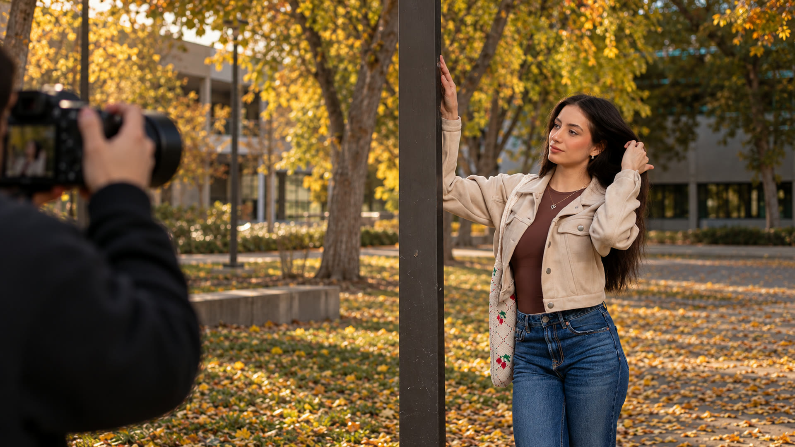
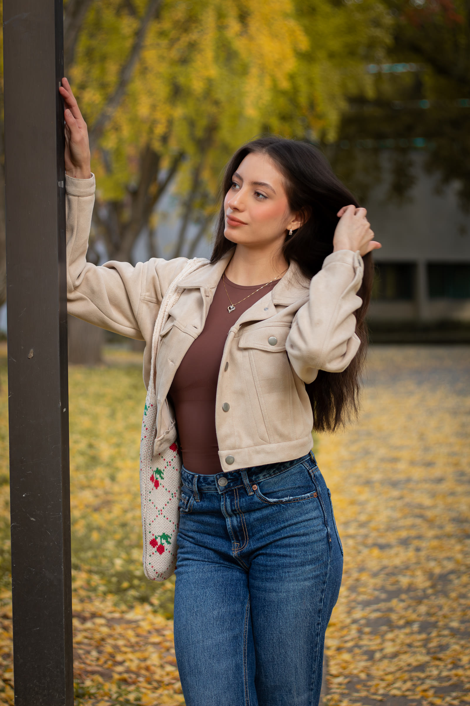

Portraits
A fresh perspective on you. Natural light, a place that feels right, and portraits with personality.
Plan a portrait session
PORTRAIT PHOTOGRAPHY · NORTHERN CALIFORNIA
Honest portraits. A little direction.
Room to be yourself.

02 / THE PHOTOGRAPH
The moment becomes something
you can keep.
01 / SELECTED WORK
A milestone. A new chapter. Or simply you,
exactly as you are.
Showing all 21 photographs
02 / THE EXPERIENCE
A fresh perspective on you. Natural light, a place that feels right, and portraits with personality.
Plan a portrait sessionYou’ve earned this moment. Let’s celebrate it with photographs that feel as good as the milestone.
Celebrate your graduationHave a mood, an outfit, or an idea you can’t stop thinking about? Let’s make room for it.
Bring your idea03 / BEHIND THE LENS
YOUR PHOTOGRAPHER.I’m a portrait photographer drawn to the moments that feel natural. My sessions are relaxed, collaborative, and built around getting to know the person in front of the lens.
You don’t need to know what to do with your hands. We’ll find a rhythm, follow the light, and make photographs that feel like you.
More moments on InstagramFROM THE FIRST HELLO TO THE FINAL FRAME
Share what you’re celebrating, the kind of session you have in mind, and when you’d like to shoot.
We’ll talk through the location, mood, and the little details that make the session personal.
Bring yourself. I’ll offer direction along the way so you can settle in and enjoy the experience.
LET’S MAKE SOMETHING PERSONAL
Vacaville, Sacramento & surrounding areas